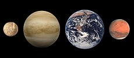
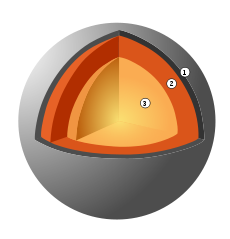
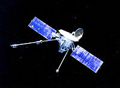
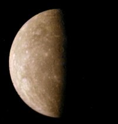
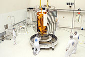
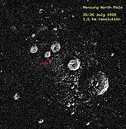

Меркурий
 Меркурий е най-малката планета в Слънчевата система и най-близката до Слънцето,
около което прави по една обиколка на всеки 87,969 земни денонощия. Тя прави
три завъртания около оста си на всеки две обиколки около Слънцето. Гледан от Земята,
Меркурий е сравнително ярък, с видима величина, варираща между −2,3 и 5,7.
Тъй като обикновено е скрит от блясъка на Слънцето, освен по време на слънчево
затъмнение, Меркурий може да бъде наблюдаван само за кратки периоди преди изгрев,
когато е близо до максималната си западна елонгация, или след залез, когато е близо
до максималната си източна елонгация.
Сведенията за Меркурий са сравнително малко, тъй като с наземни телескопи може да се
наблюдава само един осветен полумесец без много подробности. Физическите характеристики
на планетата са подобни на тези на Луната. По повърхността на Меркурий има множество
кратери и гладки равнинни области, подобно на Луната няма естествени спътници и почти
никаква атмосфера. За разлика от Луната, Меркурий има голямо планетно ядро от желязо,
което създава магнитно поле със сила около 1% от тази на магнитното поле на Земята.
Меркурий е най-малката планета в Слънчевата система и най-близката до Слънцето,
около което прави по една обиколка на всеки 87,969 земни денонощия. Тя прави
три завъртания около оста си на всеки две обиколки около Слънцето. Гледан от Земята,
Меркурий е сравнително ярък, с видима величина, варираща между −2,3 и 5,7.
Тъй като обикновено е скрит от блясъка на Слънцето, освен по време на слънчево
затъмнение, Меркурий може да бъде наблюдаван само за кратки периоди преди изгрев,
когато е близо до максималната си западна елонгация, или след залез, когато е близо
до максималната си източна елонгация.
Сведенията за Меркурий са сравнително малко, тъй като с наземни телескопи може да се
наблюдава само един осветен полумесец без много подробности. Физическите характеристики
на планетата са подобни на тези на Луната. По повърхността на Меркурий има множество
кратери и гладки равнинни области, подобно на Луната няма естествени спътници и почти
никаква атмосфера. За разлика от Луната, Меркурий има голямо планетно ядро от желязо,
което създава магнитно поле със сила около 1% от тази на магнитното поле на Земята.
Строеж
Меркурий е една от четирите земеподобни планети в Слънчевата система и, подобно на Земята, представлява скално тяло. Това е най-малката планета в Слънчевата система с екваториален радиус 2439,7 km. Меркурий е по-малък, макар и по-масивен, дори от най-големите естествени спътници в Слънчевата система – Ганимед и Титан. Меркурий е съставен по маса от приблизително 70% метали и 30% силикати. Средната плътност на планетата е втора по големина в Слънчевата система – 5427 kg/m³, малко по-малка от земната (5515 kg/m³). Ако се отчете ефектът на гравитационната компресия, материалите, от които е съставен Меркурий, са по-плътни с некомпресирана плътност 5300 kg/m³ при стойност от 4400 kg/m³ за тези на Земята.
 Плътността на Меркурий дава възможност да се правят изводи за строежа на планетата. Докато високата плътност на Земята се дължи в значителна степен на гравитационната компресия, особено в ядрото, Меркурий е много по-малък и вътрешните му части не са толкова компресирани. За да има толкова висока плътност, неговото ядро трябва да бъде голямо и богато на желязо. Ядрото на Меркурий заема 42% от обема на планетата срещу 17% за Земята. Дебелината на заобикалящата мантия е 600 km. Меркурий има най-високото желязно съдържание от всички обекти в Слънчевата система. Представени са няколко теории, обясняващи високото метално съдържание на планетата.
 Според една теория Меркурий първоначално е имал пропорционално количество силикати и метали, подобно на повечето метеорити и приблизително 2,25 пъти по-голяма от сегашната си маса. Скоро след формирането си обаче той вероятно се е сблъскал с малка планета, приблизително 6 пъти по-лека. В резултат на това Меркурий е загубил по-голямата част от първоначалната си кора и мантия, оставяйки диспропорционално голямо желязно ядро. Подобна теория се стреми да обясни и произхода на Луната (виж Теория на гигантския сблъсък).
Според друга теория Меркурий се е формирал много рано в слънчевата мъглявина, преди потокът отдавана от Слънцето енергия да се стабилизира. Първоначалната маса на планетата е била около 2 пъти по-голяма. Когато младата протозвезда и бъдещо Слънце се е сгъстила достатъчно, то температурите в близост на Меркурий са били 2500 – 3500 K и дори може би 10000 K. По-голямата част от скалния повърхностен материал на планетата буквално се е изпарила от високата температура, формирайки атмосфера от „скална пара“, която от своя страна бързо е била отнасяна в междупланетното пространство от интензивния мъглявинен вятър. Още една теория, близка до предишната, твърди, че повърхностният скален материал е ерозирал под въздействието на слънчевия вятър през по-дълъг период.
Повърхност
Кратерите на повърхността на Меркурий я правят много подобна на тази на Луната. Най-голямата забележителност на повърхността на планетата (от тази част, която е била картографирана) е Басейнът Калорис, който представлява огромен кратер с диаметър приблизително 1350 km. Характерни също са дългите стотици километри стръмни скални откоси, чието наличие се обяснява с изстиването и последвалото го свиване на голямото желязно ядро на планетата, което е довело до „набръчкване“ на кората на планетата. По-голямата част от повърхността е заета от равнини. Една част от равнините са сравнително млади и образувани вероятно под въздействието на сблъсъци с метеорити и последвалите ги потоци от разтопена лава. Меркурий е разтеглен (значително повече от другите планети) във форма на елипсоид, ориентиран с дългата си ос по посока към Слънцето, поради слънчевите приливни сили.
Условия и атмосфера
Средната температура на повърхността на Меркурий е 452 K, но локалната температура може да варира от 90 до 700 K главно поради бавното въртене и липсата на атмосфера. На тъмната страна на планетата температурите са средно около 110 K. Слънчевата енергия, която достига до Меркурий, е 8,9 пъти по-голяма за единица площ от тази на Земята. (9126,6 W/m²) Изненадващо, наблюдения през 1992 г. показват, че на северния полюс на планетата има замръзнала вода. Вероятно е тя да се намира в кратери, чието дъно остава постоянно в сянка (подобно на тези на Луната) и е била депозирана от комети и/или произлиза от газове от вътрешността на планетата.
Меркурий има само следи от атмосфера. Атмосферата му е крайно разредена, което се вижда и от факта, че молекулите на газовете се сблъскват по-често с повърхността на планетата, отколкото една с друга. Газовото съдържание е главно атомен кислород и газообразни калий и натрий. Атмосферата на Меркурий е в динамично равновесие – от една страна част от нея постоянно „отлита“ в междупланетното пространство, но от друга страна нови частици от слънчевия вятър се прихващат от магнитното поле на планетата. Калиевите и натриевите атоми се задържат средно 3 часа в атмосферата (когато Меркурий е в перихелий – само 1 час). Освен прихващане на частици от слънчевия вятър, атмосферата се обогатява от изпарения, вследствие на микрометеоритни сблъсъци, изпарение на леда в полярните кратери и посредством газове от вътрешността на планетата.
Магнитосфера
Въпреки бавното си въртене, Меркурий има сравнително силна магнитосфера, имаща магнитно поле с интензитет 1% от земното.[16][17] Възможно е това магнитно поле да е генерирано по начин подобен на земния, посредством динамо, образувано от циркулацията на разтопени материали в ядрото на планетата.[18] За желязно-никеловото ядро на Меркурий се смята, че не е разтопено, а циркулацията се осъществява от елементи с по-ниска точка на топене като сяра. Според друга теория, магнитното поле на Меркурий е остатъчен ефект от предишно намагнетизиране (когато планетата е имала разтопено ядро). С други думи, Меркурий постепенно се размагнетизира.
Орбита и въртене
Орбитата на Меркурий е ексцентрична с разстояние до Слънцето вариращо от 46 до 70 милиона километра; от всички други планети само Плутон има по-ексцентрична орбита. Бавната прецесия на орбитата не може да бъде напълно обяснена от класическата механика на Исак Нютон и за известно време прецесията се е обяснявала с наличието на планета по-близко до Слънцето дори от Меркурий – хипотетичната планета Вулкан. Тази аномалия на орбитата на Меркурий обаче е напълно обяснена от теорията на относителността на Алберт Айнщайн. Изследвания на орбитата на Меркурий показват, че нейният ексцентрицитет варира хаотично между 0 (кръгова орбита) и 0.45 (силно разтеглена орбита). [Nature, 24 юни 2004 г.] Според този текст орбитален резонанс 3:2 е по-вероятно състояние на ексцентричната в момента орбита на Меркурий от резонанс 1:1.
Преди да бъде измерено с помощта на радар през 1965 г., за въртенето на Меркурий се смятало, че е синхронно спрямо Слънцето поради значителните приливни сили. Истината за Меркурий обаче е, че той е в 3:2 орбитален резонанс спрямо Слънцето (завъртайки се около оста си три пъти за всеки две свои орбити). Сравнително голямата ексцентричност на орбитата на планетата прави този резонанс стабилен. Причината за погрешното схващане, че Меркурий е винаги обърнат с една и съща страна към Слънцето бе породена от факта, че той винаги е обърнат с една и съща страна към Земята при най-близкия си подход. Заради орбиталния резонанс на планетата, нейният звезден ден е 58.7 земни дни, а нейният слънчев ден – приблизително 176 земни дни.
Наблюдател на определени точки от повърхността на Меркурий ще може да види Слънцето да се покаже наполовина при изгрев, след това да залезе и пак да изгрее в рамките на един и същ меркуриански ден. Това зрелище е възможно поради това, че приблизително четири дни преди перихелий орбиталната скорост на планетата се изравнява със скоростта ѝ на въртене. Така видимото движение на Слънцето спира. По време на перихелия орбиталната скорост надвишава скоростта на въртене и Слънцето започва да залязва. След четири дни обаче орбиталната скорост става отново по-малка от скоростта на въртене и Слънцето отново спира и започва да изгрява.
Изследване
Ранни астрономи
Меркурий е бил известен поне от времето на шумерите от 3 хилядолетие пр.н.е., които са го наричали Убу-идим-гуд-уд. Най-ранните записки на наблюденията на планетата са направени от вавилонците, които са я наричали гу-ад или гу-ту. Древните гърци са смятали сутрешното и вечерното явление на Меркурий за две различни небесни тела. Сутрешното му явление са наричали Аполон, а вечерното Хермес. Гръцките астрономи обаче разбрали, че става въпрос за едно и също тяло и първият грък, предположил това, е Питагор. За Хераклит Понтийски се счита, че първи е разбрал, че Венера и Меркурий обикалят около Слънцето, а не около Земята. Римляните са кръстили планетата на крилатия пратеник на боговете Меркурий (на латински: Mercurius), който е еквивалент на гръцкия Хермес.
Наблюдение на Меркурий
Наблюденията на Меркурий в значителна степен се усложняват от близостта му до Слънцето, тъй като планетата обикновено се изгубва в блясъка на звездата. Меркурий може да се наблюдава само за кратък период в сутрешния и вечерния сумрак. Подобно на Венера и Луната, Меркурий преминава през фази. По време на максимална елонгация приблизително 50% от диска на планетата е видим. Когато е в максимална западна елонгация, Меркурий изгрява най-рано сутрин, а когато е в максимална източна елонгация – залязва най-късно вечер. Числената стойност на максималната елонгация зависи от това, дали планетата е в перихелий (18,5°) или афелий (28,3°). Меркурий изглежда най-ярък, гледан от Земята, когато малко повече от половината от диска му е осветен, за разлика от Венера, която постига своята максимална яркост при по-малко от 50% видимост на диска. Меркурий се доближава максимално до Земята средно на всеки 116 дни (от 111 до 121 дни поради ексцентричността на орбитата).
Любопитен факт е, че Меркурий се наблюдава най-лесно от южното полукълбо поради факта, че при максималната западна елонгация е ранната есен в южното полукълбо, докато максималната източна елонгация съвпада с края на зимата в същото полукълбо. В двата случая ъгълът между Меркурий и еклиптиката достига максималната си стойност и в умерените зони на страни като Аржентина и Австралия, това позволява той да се наблюдава няколко часа преди изгрев и след залез. В умерените ширини на северното полукълбо планетата почти никога не е видима над хоризонта. Меркурий може също така да бъде наблюдаван по време на пълно слънчево затъмнение, но това е твърде кратко време за наблюдения.
Как да стигнем до Меркурий
Орбитата на Меркурий е три пъти по-близко до Слънцето от тази на Земята. Тази разлика се равнява на 91 милиона километра, които трябва да бъдат изминати по посока към Слънцето. Потенциалната енергия, освободена при този преход, ще се преобразува в кинетична енергия, която ще доведе от своя страна до значително увеличение на скоростта. За близък и безопасен подход към Меркурий е необходимо да се ограничи тази допълнителна скорост. Ситуацията е аналогична на излизане от път на ръба на пропаст, пропадане надолу в пропастта и безопасно включване в движението на друг път, който се намира на дъното на пропастта (виж орбитална механика и преходна орбита на Хоман). Поради тези проблеми, до 2004 г. са проведени само две мисии до Меркурий, като те са използвали по-ефективния метод на гравитационно подпомагане, вместо директна преходна орбита.
Маринър 10
 Първият космически апарат, изследвал Меркурий, е Маринър 10 на НАСА през 1974–75 г. Апаратът използва гравитацията на Венера, за да нагоди скоростта си и да достигне Меркурий. Това е първият космически апарат, който използва гравитационно подпомагане. Маринър 10 прави първите снимки на Меркурий отблизо, където веднага се забелязва, че повърхността на планетата е осеяна от множество кратери, както и от стръмни скални откоси, чието наличие се обяснява с изстиването и последвалото го свиване на голямото желязно ядро на планетата. Сондата успява да заснеме само 45% от повърхността на планетата заради късия си орбитален период. Маринър 10 прави три близки прехода до планетата, като най-близкият е на разстояние 327 km от повърхността. Само няколко дни след последното сближаване с Меркурий, на апарата му свършва горивото; след като сондата вече не може да бъде управлявана, ръководителите ѝ я „изключват“ на 24 март 1975 г. Най-вероятно Маринър 10 е в орбита около Слънцето и минава близко до Меркурий на всеки няколко месеца.
МЕСИНДЖЪР
  Втора мисия на НАСА с име МЕСИНДЖЪР (на английски: MESSENGER, съкращение от MErcury Surface, Space ENvironment, GEochemistry, and Ranging) беше изстреляна на 3 август 2004 г. от ВВС база Кейп Каневерал, САЩ, посредством ракета Делта II. МЕСИНДЖЪР прелита близо до Земята през август 2005 година и близо до Венера през октомври 2006 и юни 2007. Първото прелитане около Меркурий става на 14 януари 2008 г. Апаратът ще осъществи още два близки подхода към Меркурий през октомври 2008 и септември 2009 г., преди да влезе в орбита около планетата през март 2011 г. По-голямата част от незаснетото полукълбо от Маринър 10 ще бъде картографирано при тези прелитания. МЕСИНДЖЪР ще навлезе в еклиптична орбита около планетата през март 2011 година. Мисията има за цел да установи няколко основни характеристики: голямата плътност на планетата, геоложката история на Меркурий, природата на магнитното му поле, структурата на ядрото му и откъде идва разредената му атмосфера.
Япония и ЕКА
Европейската космическа агенция и Япония планират съвместна мисия до Меркурий, наречена BepiColombo, която ще изпрати два апарата до планетата – един за картографиране на повърхността и друг за изследване на магнитосферата. Първоначалните планове за включване на спускаем модул са били отменени. Апаратите ще бъдат изстреляни от Земята посредством руска ракета-носител Съюз през 2013 г. от космически център Гвиана, за да се използва разположението на космодрума до екватора. Апаратите ще достигнат Меркурий през 2019 г. Първо ще бъде пуснат апаратът за изучаване на магнитосферата, а след това химическите двигатели ще се задействат, за да осигурят сферична орбита на апарата за картографиране. И двата апарата ще функционират около една земна година. Сондата за картографиране ще бъде оборудвана със спектрометри, с които ще изучава планетата с различни лъчи, включително инфрачервени, ултравиолетови, рентгенови и гама-лъчи. Космическият апарат е кръстен на Джузепе Коломбо, ученият, който е направил множество изследвания на планетата, както и е предложил маневрата гравитационно подпомагане, с която Маринър 10 е успял да навлезе в орбитата на Меркурий.
Възможности за колонизация
 Кратерите на северния и южния полюс на Меркурий може да се окажат подходящо място за човешка колония, тъй като температурата там ще остане практически постоянна (около −200°) в продължение на една меркурианска година. Това е възможно поради по същество нулевия наклон на оста на въртене и липсата на атмосфера, която да пренася топлина от огрените части на планетата. Човешките дейности на дъното на такива кратери ще спомогнат за затоплянето на околностите до комфортна температура, а също излишната топлина може да бъде разсеяна много по-лесно, отколкото на Земята.
База на друга част от повърхността ще трябва да понася продължителни периоди от интензивно слънчево греене по време на меркурианския ден и периоди без никакво външно затопляне по време на меркурианската нощ. Този проблем може да се преодолее чрез изграждането на базите на няколко метра под прахообразния реголит, който ще играе ролята на термичен изолатор и радиационен щит. По подобен начин ще могат да се изградят и колонии на Луната, чиито дни и нощи имат продължителност по две седмици. Поради липсата на атмосфера, пренасяща топлина, охлаждащ радиатор на сянка ще може да разсейва топлина в околното пространство през целия меркуриански ден. Като алтернатива базата може да използва топлоакумулатор, който да поема излишната топлина през деня и да я разсейва през нощта. Защитата на превозни средства и роботи може да се окаже по-трудна и повърхностната активност през деня ще трябва да се ограничи.